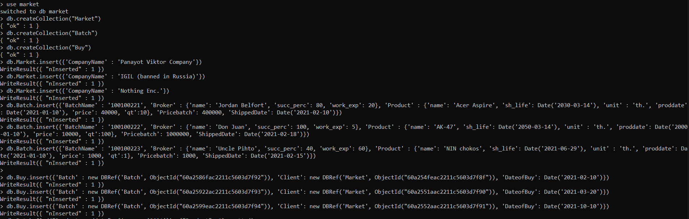
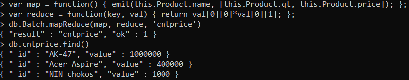

Model for Mongo

Pict. 1 Infological model for Mongo
Logs

Requests
- Вывод партий, начинающихся на 1 и стоящих более 1000

-
Вывод партий, проданных в 2021 году

-
Вывод товаров, произведенных в 2021 году

-
Вывод длины имён брокеров

MapReduce
- Рассчёт цены партии по её содержимому 